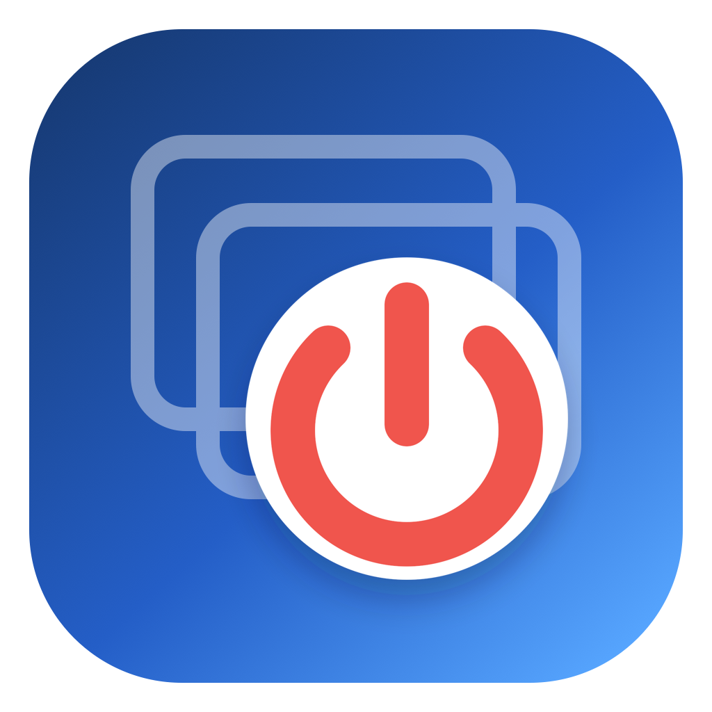

Safe normal quitting
Apps can still ask you to save. Quit All never force-quits your work.
Free · Open source · Apple silicon
A tiny native macOS utility that closes normal apps and Finder windows, keeps AlDente running, and never needs Rosetta.

Apps can still ask you to save. Quit All never force-quits your work.
AlDente is protected by both its bundle identifier and application name.
A small arm64 AppKit app for M-series Macs, with no Rosetta dependency.
Quit All has no analytics, network access, login item, or persistent helper. It runs once, asks open foreground apps to quit, closes Finder windows, and exits.
Requires macOS 13 or later and an Apple-silicon Mac. The community build is ad-hoc signed, so macOS may ask you to approve it in Privacy & Security on first launch.